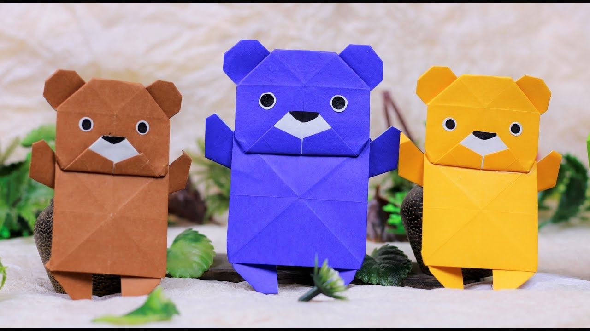
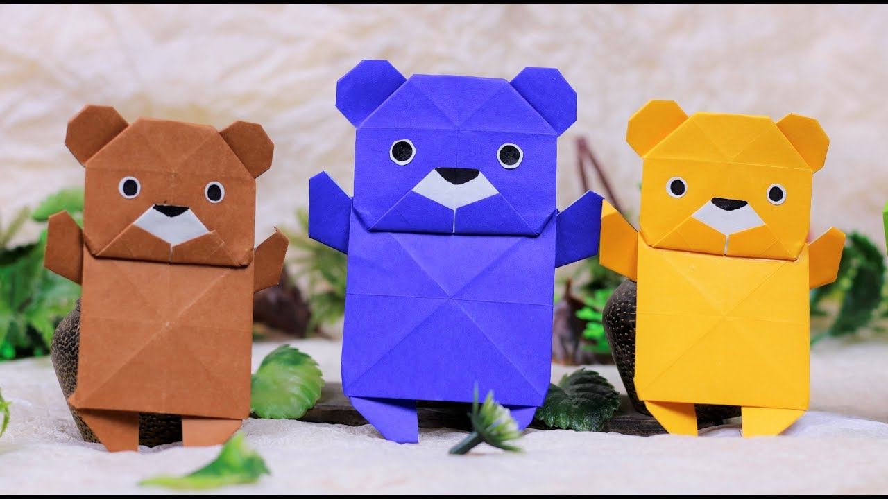

In Japan, origami has inspired a lot of art, fashion, food, and even architecture! If you visit, try to find all the buildings based on origami style. Hint: there’s a lot.
There are more than a dozen National Origami Associations throughout the world.
The fastest time to make 100 origami cranes is 40 minutes 35 seconds, achieved by Yoneyama Yuichi (Japan) in Nagoya, Japan, on 30 November 2010. That’s an average of 24.35 seconds for each crane!
An ancient Japanese legend says if you fold one thousand cranes you will be granted a wish. Feeling lucky?


 
